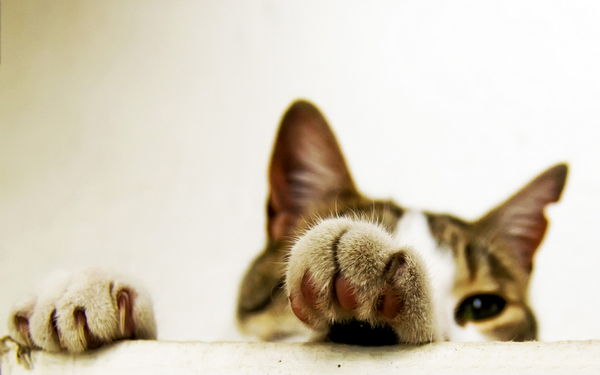

 初看文章题目，给人感觉很严肃或者正式，其实是些简单的小结。
一年将至结尾，是要作一个小小的总结的，记录这一年里自己生活中的事件。说是总结，也想不出要以怎样的方式进行记录，按照时间轴来叙述的话像是在清理流水账，未免显得单调与乏味。为找些灵感，特地翻了翻自己空间里的说说以及新浪微博，发现说说的内容很少，微博亦尽是些枯燥而没有实质的东西。生活中的琐事一件件搬上来的话并非必要，现遍历了脑袋里有关2012年里的资料，选择出一些大事记。
一二年让自己从大二升到了大三，很感谢这一过程，让自己知道自己想要的是什么并且到现在一直在努力奋斗着，收获当然会有很多。仍记得上半年还是大二的时候，那时自己的生活是多么的无趣，有过一段时间课不上，在宿舍里也不学习其他的知识，什么事情也不想干，什么事情也干不好。大二上学期时候有过迷茫，那时经过一些思考，认为自己已经度过了迷茫期，但事实证明还是没有。现在回过头来看，觉得自己虽然没在那两段迷茫的日子里没有干出什么值得骄傲的事情，但也是一个必经的过程，没有那段经历也不会有现在有梦想有激情的自己。所以我一直认为我们不管做什么事情，仔细思考其过程，总会得到收获，有时候只不过是收获的大小而已。
在有非学习上事情想不通的时候喜欢出去走走或者和伙伴出去旅游，这会起到很大的作用，至少很适合自己。一二年里仅出游过一次，五一的时候走了走三江。三江的风雨桥确实很特别，旅游的过程中领略了文化的风情，还长了见识。过程当然很开心，但也没忘记自己的事情。晚上一个人在房间里，关上灯，外面漆黑一片，蛙声不断，想了很多的事情。后来去了柳州，见了伙计，逛了高校。回来之后发现自己变了。记得初中的时候就有人说过我善变，没怎么觉得，认为那是自己对事物或者生活认识的提升。
一二年的暑假干了一件让我一辈子都不会忘记的事情，就是从南宁骑行回家。之前博客有文章详细记录，不过后来换主题的时候把内容也换掉了，不过没关系，骑行的过程已经永远储存在脑袋里，只因实在太深刻。骑行确实是一件快乐的事情，路上会遇到很多目的地不一的人，大家有着相同的爱好，有着对骑行一样的激情。那次骑行能安全回来觉得自己已经很了不起了，之前没接触过这方面的运动，虽在启程前一个月里都有在锻炼自己的身体，但二百多公里的路程确实让自己的身体吃不消，最后也延时到第二天安全到了家里。暑假之后的日子和之前预计的一样，伙伴们都不会太多的时间在一起，各忙个的事情，而且明年的暑假更是如此。这也是到人生这个阶段应该经历的事情，这个时候，人都开始为自己的梦想奋斗，花更多的时间来准备着自己以后的生活，忙到渐渐与周围的伙伴减少了联系，然后见了面，更多的是寒暄工作中的事情。这是出现在生活中的真实写照，暂时还没在我的生活中出现，不过不用多少时间就会看到。假期里学习了服务器的知识，并在自己电脑里搭建了服务器，虽能成功从外网进行访问，做到了很久之前的想做的事情，但也只是菜鸟级别能做到的事，要学的东西太多了。一直不会对自己技术的水平抬得很高，在这两年的学习中发现，学的东西越多，感觉自己的水平越低，知识面很窄，生活是一个不断学习的过程，平时做的每一件事情都可以认为是在学习，自己平时就是以这样一种心态生活着，并且收获很多。假期剩下的日子就是用买来的域名和空间来开通自己的个人博客了。
开博有四多个月的时间，其间也经历了很多的坎坷，才有了今天的这番模样，之前的一些文章里有记录开博的过程，感觉在建立自己博客的道路上要遇到些挫折才圆满，自己也才会这过程中慢慢成长，学到更多的技能，增加自己的经验值，说得好像在玩游戏一样，其实我就是在玩游戏，而且还觉得越来越好玩停不下来。平时玩博客的时候很喜欢逛友链，发现人家的博客圈好大，都是一些志同道合的朋友在一起谈天说地，讨论生活或者技术，这样很好啊。发现自己身边的人对博客这一块似乎不太感冒，几乎没人开个人博客，互动没有，友链更是没添加上去。有时在想是不是自己的行为太独特了，做的事情都不是大众化的，想不通，或许真的是吧。别的不去想太多，只是会坚持自己当初的想法，在这个小博客上不断记录自己生活中的东西，虽不频繁更新，但也都是自己的心得和感悟。
踏入大三，注定自己会变得不一样。年初刚学编写网页的时候就计划花三个月的时间学习网页的编写，六月的时候接下一单给别人做个网站，直到大二结束了都没能完成这个任务。今年九月初的时候机会来了，有人找我问道要不要做网站，当时没立即答应，之后不了了之。十月月末的时候那人又找我问起做网站的事，那时并非有太多的时间，只因看到伙伴那么有激情，不好推脱便接下了这活。网站的要求还算简单，听完其简要介绍，用三天逃课和课余的时间就完成了全部代码的编写，后来修修改改共用了两周的时间终于全部完成任务。报酬且不谈，收获的主要是其过程，自己体会到了工作的辛苦，体会到长时间在电脑面前工作脖子会酸。能全部完成任务算是好的，这是一个很好的开始，以后还有很长的路要走，坚持下去。
一直都在“阶段”地生活着，这也是个人的一种生活方式，之前有描述过自己在这方面的看法，生活中每个阶段都有该阶段应该做的事情。在灵犀话剧社里呆了两年，经历过很多的值得现在慢慢品味的事情，在灵犀里一些简要的情况在之前的文章里有记叙。仍记得当初是抱着对话剧的兴趣进了灵犀，到现在兴趣一直在。在话剧社里唯一的遗憾是没能写出一个自己满意的剧本然后拍成微电影，想法有太多太多，只是无奈现实条件不允许这部作品的完成。不管能否拍出来，剧本一定要写出来。
一二年的尾声，渐渐淡出类似QQ的即时聊天方式，减少逛微博的频率并删除了好友分组，在众多流行的联系方式中减少了与好友的联系，偶尔上Q仅仅是查看学习上遗漏的信息，没有看见有信息处理的话不会停留太久。这是一个信息的时代，我需要信息。有其他方式的话可以不选择登Q，有时会想QQ在一定程度上确实影响着我们的生活。最近基本在 Facebook 和 Twitter 上活动，那里有着更少的好友，这当然是不介意的。在上面也不过是发表或者转发一些技术上的东西，不会太愤青，还是很文明的。这几个月里都在看NA的书，四个学期早已毕业，在里面学到的东西实在是太多了，让我感到前所未有的兴奋。本以为在一二年的十二月里会考试，没想到推到了下个学期，也好，有更多的时间学习，而且也可以缓解一下经济状况。现在可以说是学得风生水起，下个学期就要考试，努力努力，过了之后不管有没有下定决心继续考下去，我都会抽时间学习NP的知识，但不会是在一三年。如果要考的话，只能是一四或者一五年的是事情了。
过去一年的感情状况还是和往常一样，几乎与女生没有交流，女朋友也没想过。看着以前的好友都找到了各自的另一半，这都是偶尔在微博上了解到的，说实话，会有丝丝羡慕，但是不会饥渴到到处发传单征集女朋友。对于感情这方面，有自己的想法，一直在等着，不管有没有，都在等着。感情方面的事情就总结这么多，没什么好总结的。
一三年，祝所有人顺顺利利。